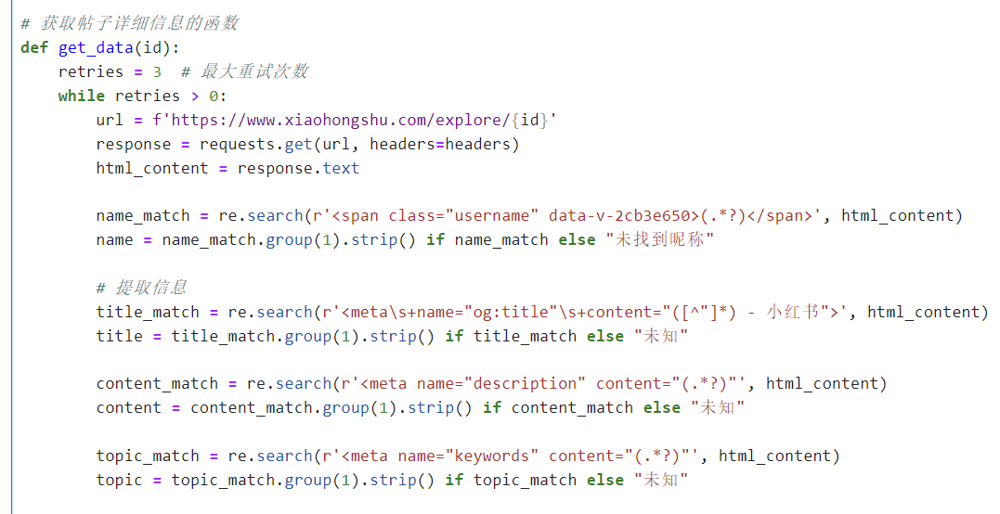
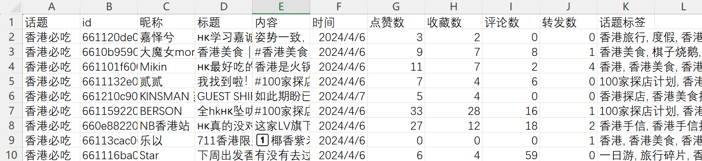
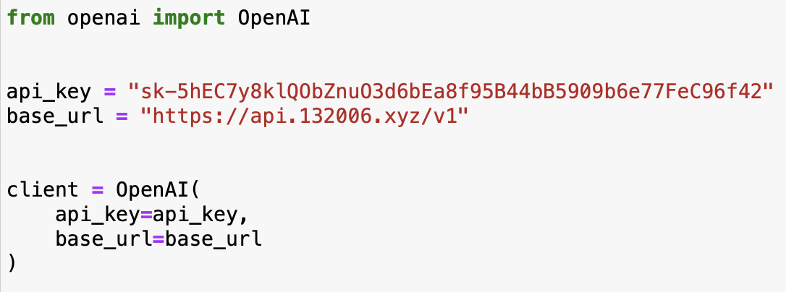

Goal
Explore how public Xiaohongshu post data can support headline optimisation.
Content analytics project
A content analytics project exploring how Xiaohongshu post data can support headline optimisation.
This project includes public data collection, data cleaning, engagement-based headline review and an AI-assisted headline generation prototype.
01
Explore how public Xiaohongshu post data can support headline optimisation.
A workflow from data cleaning to headline review and prototype logic.
Selected screenshots and extracted images from the original project PPT are used as supporting evidence.
02
My work focused on public data collection, data cleaning, engagement-based headline review, prompt construction support and prototype testing logic.
03
Xiaohongshu is a UGC-driven platform where headlines influence whether users click, save or interact with a post. The marketing question is how headline features can be reviewed and turned into usable content guidance.
04
05
Public post data was collected with Python, Selenium, Pandas and Requests. The workflow used public content examples as a learning material for headline review, not private platform analytics.

06
The dataset was cleaned by removing duplicates, cleaning text, removing irrelevant fields and sorting by likes/favourites to prepare an analysis-ready sample.

07
The review used likes and favourites as visible engagement signals. These are directional signals only and do not prove causal performance.
Directional engagement signal summary from sampled posts, not a full platform benchmark.
08
Shows what users can eat, buy, visit, save, avoid or learn.
Uses location, price, scenario or identity labels.
Creates a reason to open the post without misleading the reader.
Checks whether the title promise matches the actual post.
09
10
Prompt logic connected content input, platform context, example headline patterns, tone rules, generated options and human review.

11
The prototype was a small web application logic for generating several Xiaohongshu-style headline options from input content. This is shown as prototype evidence, not as a live product.
12
今天中午特意带小伙伴们来打卡一家我爱吃的茶餐厅。这家【炳记茶档】真的是香港排队王。我推荐的第一名就是【猪排多士】。
13
The main value is not the AI tool itself. The value is a content workflow: public Xiaohongshu data → data cleaning → engagement-based headline review → prompt logic → generated options → human review.
14
Future testing could compare headline angles, length and specificity while keeping post content constant. Metrics could include click-through, saves, comments and qualitative feedback.
15
16
Public engagement signals are incomplete. Likes and favourites can suggest useful patterns but cannot prove why a post performed well. The prototype requires human review and future testing before practical use.
17
This project shows a content analytics workflow for headline optimisation: collect public data, clean it, review engagement signals, construct prompt logic and evaluate generated options with marketing judgment.